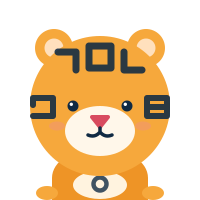

TOPIK STUDY DESKは、韓国語能力試験（TOPIK）Iの対策を、無料・登録不要で学べる非公式の学習支援サイトです。運営はTOPIK STUDY DESKが行っています。
このサイトについて
TOPIK STUDY DESKは、日本語で学ぶ人のためのTOPIK I（1級・2級）対策サイトです。単語・文法・聞き取り・読解の練習問題、オリジナル模試、韓国旅行で使える会話表現を、ブラウザだけで利用できます。アプリのインストールは不要です。
当サイトは個人運営の非公式サイトであり、TOPIKの主催・主管機関、韓国教育財団その他の公式機関とは関係ありません。試験日程や申込方法などの公式情報は、試験概要から公式サイトでご確認ください。
対象と学べること
- TOPIK Iの1級・2級を目指す方（TOPIK IIには対応していません）
- 単語トレーニング全2,000項目、文法30項目、聞き取り40問、読解130問、総合練習
- オリジナル模試（聞き取り・読解、200点満点で級の目安を表示）
- 韓国旅行で使える場面別会話カードとソウルの地図・地下鉄ガイド
学習の進め方
学習は9つのユニットで構成するカリキュラムに沿って進められます。間違えた問題や忘れかけた単語・文法は、間隔反復（SRS）の仕組みで適切なタイミングに復習へ出題され、学習記録はユニットごとの進捗として確認できます。まず何から始めるかは、TOPIK I 勉強法にまとめています。
料金について
現在提供している学習機能は、すべて無料です。単語・文法・聞き取り・読解・模試などの基本の学習機能は、今後も無料のまま提供します。将来、有料の追加コンテンツを提供する場合は、各商品ページと特定商取引法に基づく表記で内容と価格を明示します。
アカウントと学習記録の同期
アカウント登録は不要です。学習記録は原則として利用者の端末（ブラウザ）内に保存されます。希望する方は、Googleアカウントでログインすると、学習記録をクラウド（CloudflareのD1データベース）に保存し、スマートフォンとパソコンなど複数の端末で引き継げます。保存する情報と取り扱いはプライバシーポリシーをご確認ください。
マスコット「ホヤ」

当サイトのマスコットは、虎の「ホヤ（호야）」です。韓国の建国神話では、人間になるための100日の試練を熊は耐えきりましたが、虎は途中で逃げ出したとされています。ホヤは、その虎が今度は韓国語の勉強に挑戦しているという設定のキャラクターで、先生ではなく、利用者のみなさんと同じ「学習者」の仲間として、結果画面などで応援します。ホヤの縞模様は、ㄱ・ㄴ・ㄷ・ㅁ・ㅂ・ㅇといったハングルの子音の形になっています。額や頬、おなかの縞をよく見ると、文字の形が見つかります。
運営者情報
- サイト名：TOPIK STUDY DESK（TOPIK STUDY）
- 運営者：TOPIK STUDY DESK
- お問い合わせ：お問い合わせ・不具合報告ページからご連絡ください